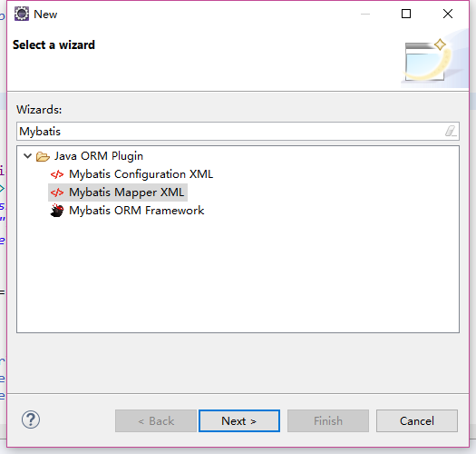
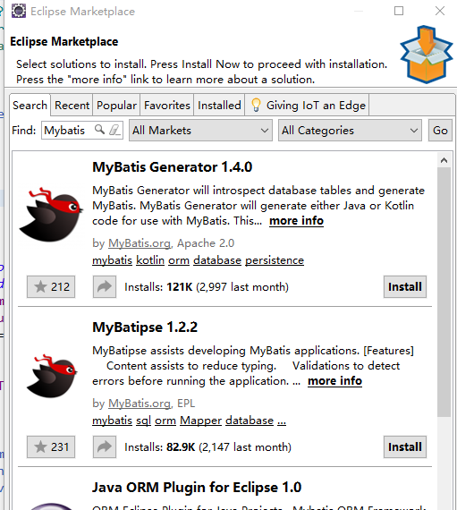
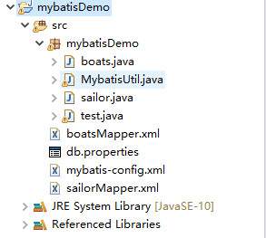
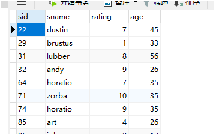
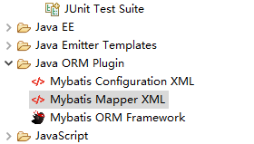

MyBatis 入门知识点
MyBatis 是什么？
MyBatis 本是apache的一个开源项目iBatis, 2010年这个项目由apache software foundation 迁移到了google code，并且改名为MyBatis 。 MyBatis 是一款优秀的持久层框架，它支持定制化 SQL、存储过程以及高级映射。MyBatis 避免了几乎所有的 JDBC 代码和手动设置参数以及获取结果集。MyBatis 可以使用简单的 XML 或注解来配置和映射原生信息，将接口和 Java 的 POJOs(Plain Ordinary Java Object,普通的 Java对象)映射成数据库中的记录。
MyBatis官方文档：https://mybatis.org/mybatis-3/zh/index.html
拓展介绍：ORM
对象关系映射（Object Relational Mapping，简称ORM）是通过使用描述对象和数据库之间映射的元数据，将面向对象语言程序中的对象自动持久化到关系数据库中。（即直接将JAVA对象与数据库对应起来） 对象-关系映射（Object/Relation Mapping，简称ORM），是随着面向对象的软件开发方法发展而产生的。面向对象的开发方法是当今企业级应用开发环境中的主流开发方法，关系数据库是企业级应用环境中永久存放数据的主流数据存储系统。对象和关系数据是业务实体的两种表现形式，业务实体在内存中表现为对象，在数据库中表现为关系数据。 常见的ORM框架：MyBatis、Hibernate等

我的第一个MyBatis项目（Eclipse）
导入jar包
- 需要导入MyBatis所需的依赖包： 中文官网下载地址： http://www.mybatis.cn/82.html
- 需要导入MySQL的驱动包： mysql-connector-java-8.0.18 （JDBC驱动包）
Eclipse准备Mybatis插件
建项目之前要先检查一下Eclipse是否有MyBatis插件（有的话在之后创建.xml文件时会方便很多，可以自动生成.xml文件）。
检查方法：File->New->Other 输入 MyBatis 搜索一下，如果有提示存在MyBatis Mapper XML 等文件（如下图）即包含该插件，没有的话就去加载一下该插件。

加载MyBatis插件的方法：Help->Eclipse MarketPlace 输入MyBatis查找，加载相应插件即可。只有需重启Eclipse。

简单MyBatis项目文件结构

之后，文件都会有相应讲解，这里只进行概述。 测试项目中涉及到两张MySQL数据表：boats和sailors。所以项目中包含相应的实体类和相应的映射配置文件boatsMapper.XML 和sailorMapper.XML mybatis-config为MyBatis项目总体的配置文件，主要包括两部分：数据库配置、实体类与对应配置文件映射关系的注册 MybatisUtil.java 为一个MyBatis的工具类。其实只是一个集成了getSqlSession和closeSqlSession方法的类，用于之后创建和关闭session。【Session是一个重要的概念，简单来理解就是：Session维护了一个与MySQL数据库的连接（Connection，只要需要操作数据库，都需要用到Session对象。】
讲解样例所用到的数据表：

其中sid为主键。
mybatis-config.XML
代码片段：
<configuration> <properties resource="db.properties" /> <!-- <typeAliases> <typeAlias type="#package.#modelname" alias="#modelname"></typeAlias> </typeAliases> --> <environments default="development"> <environment id="development"> <transactionManager type="JDBC" /> <dataSource type="POOLED"> <property name="driver" value="com.mysql.cj.jdbc.Driver" /> <property name="url" value="jdbc:mysql://localhost:3306/homework?serverTimezone=UTC" /> <property name="username" value="root" /> <property name="password" value="$PASSWORD" /> </dataSource> </environment> </environments> <mappers> <mapper resource="boatsMapper.xml" /> <mapper resource="sailorMapper.xml" /> </mappers></configuration>其中dataSource标签内为数据库链接部分，完全和JDBC链接一样。需要注意的是，旧版本中MySQL的驱动（driver）是：com.mysql.jdbc.Driver。现在需要在中间加上“cj”。另外数据库链接地址（url）中“?serverTimezone=UTC”可以防止出现乱码。 mapper标签注册了各个实体所对应的配置文件（.XLM文件），使用前别忘记在这里注册。
实体类与对应的配置文件
实体类代码片段：
xpackage mybatisDemo;public class sailor { private int sid; private String sname; private int rating; private int age; public int getsid() { return sid; } public void setsid(int num) { this.sid = num; } public String getsname() { return sname; } public void setsname(String name) { this.sname = name; } public int getrating() { return rating; } public void setrating(int rating) { this.rating = rating; } public int getage() { return age; } public void setage(int age) { this.age = age; } public String toString() { return "sailors [sid=" + sid + ", sname=" + sname + ", rating=" + rating +", age="+age+"]"; }}这部分代码很简单，就是一堆set、get方法。这些实体类所对应的属性应该与数据库中表的属性一致。重写toString方法便于后台输出进行测试。
对应的.XML配置文件：
xxxxxxxxxx <mapper namespace="sailorID"><!-- <select id="getSomething" parameterType="int" resultType="#package.#modelname"> SELECT columnname1, columnname2, columnname3 FROM tablename1 WHERE columnname1 = #{value} </select>--> <resultMap type="mybatisDemo.sailor" id="sailorMapper"> <id property="sid" column="sid" /> <result property="sname" column="sname" /> <result property="rating" column="rating" /> <result property="age" column="age" /> </resultMap> <select id="getAllSailors" resultType="mybatisDemo.sailor"> SELECT * FROM sailors </select><!-- <insert id="insertSomething" parameterType="#modelname"> INSERT INTO tablename1 (columnname1, columnname2, columnname3) VALUES(#{value1},#{value2},#{value3}) </insert> <update id="updateSomething" parameterType="#modelname"> UPDATE tablename1 SET columnname1=#{param1} WHERE columnname2 = #{param2} </update> <delete id="deleteSomething" parameterType="int"> DELETE FROM tablename1 WHERE columnname1 = #{param1} </delete>--></mapper>namespace:命名空间，之后操作实体对象时需要唯一确定要进行的操作，就是利用这个命名空间进行定位，所以这个名称需要保证唯一。
resultMap标签：用来映射实体对象与数据库的表。type字段需要填入的是与该配置文件对应的实体类的位置（注意完整，要加包名），id字段为该resultMap的一个名字，由它定位，随便取（这里取silorMapper）。之后的id/result标签(id表示主键)中property为实体类中的属性名，column为数据库中对应表的主键。为了方便，构建实体类时尽量与数据库中字段名保持一致。
后面有一些标签，例如delete标签、update标签、select标签、insert标签等均为一些具体操作，其用法大同小异，这里以select标签为例：
id为该项操作的名字，结合之前的namespace用来唯一定位某一操作（例如，用sailorID.getAllSailors可以唯一定为该select操作）。resultType为实体类路径（有的方法中需要参数“parameterType”后面填的也是实体类路径）后面的SQL语句会自动生成。（Eclipse需要有mybatis插件，在生成该XML时选择新建“MyBatis Mapper XML”即可）

这里重点说一下：例如insert操作中SQL语句有：
xxxxxxxxxx<insert id="insertSomething" parameterType="#modelname"> INSERT INTO tablename1 (columnname1, columnname2, columnname3) VALUES(#{value1},#{value2},#{value3}) </insert>其中#{属性名}这种写法表示占位符，例如#{sid},这样写代表这里取该实体对象的sid的值，也就相当于这样写表示调用该实体对象的getsid（）方法。
MybatisUtil.java
代码片段：
xxxxxxxxxxpackage mybatisDemo;import java.io.IOException;import java.io.Reader;import java.sql.Connection;import org.apache.ibatis.io.Resources;import org.apache.ibatis.session.SqlSession;import org.apache.ibatis.session.SqlSessionFactory;import org.apache.ibatis.session.SqlSessionFactoryBuilder;/** * 工具类 * @author AdminTC */public class MybatisUtil { private static ThreadLocal<SqlSession> threadLocal = new ThreadLocal<SqlSession>(); private static SqlSessionFactory sqlSessionFactory; /** * 加载位于src/mybatis.xml配置文件 */ static{ try { Reader reader = Resources.getResourceAsReader("mybatis-config.xml"); sqlSessionFactory = new SqlSessionFactoryBuilder().build(reader); } catch (IOException e) { e.printStackTrace(); throw new RuntimeException(e); } } /** * 禁止外界通过new方法创建 */ private MybatisUtil(){} /** * 获取SqlSession */ public static SqlSession getSqlSession(){ //从当前线程中获取SqlSession对象 SqlSession sqlSession = threadLocal.get(); //如果SqlSession对象为空 if(sqlSession == null){ //在SqlSessionFactory非空的情况下，获取SqlSession对象 sqlSession = sqlSessionFactory.openSession(); //将SqlSession对象与当前线程绑定在一起 threadLocal.set(sqlSession); } //返回SqlSession对象 return sqlSession; } /** * 关闭SqlSession与当前线程分开 */ public static void closeSqlSession(){ //从当前线程中获取SqlSession对象 SqlSession sqlSession = threadLocal.get(); //如果SqlSession对象非空 if(sqlSession != null){ //关闭SqlSession对象 sqlSession.close(); //分开当前线程与SqlSession对象的关系，目的是让GC尽早回收 threadLocal.remove(); } } /** * 测试 */// public static void main(String[] args) {// Connection conn = MybatisUtil.getSqlSession().getConnection();// System.out.println(conn!=null?"连接成功":"连接失败");// }}这个工具类是封装了getsession()和closesession()。用于创建、关闭Session。
test测试文件
test.java
xxxxxxxxxxpackage mybatisDemo;import java.io.IOException;import java.io.Reader;import java.sql.Connection;import java.util.ArrayList;import java.util.List;import org.apache.ibatis.io.Resources;import org.apache.ibatis.session.SqlSession;import org.apache.ibatis.session.SqlSessionFactory;import org.apache.ibatis.session.SqlSessionFactoryBuilder;public class test { public static void main(String[] args) {// boats b = new boats();// b.setbid(2);// b.setbname("ll");// b.setcolor("y"); //List<boats>boatAns= new ArrayList<boats>(); List<sailor>sailorAns= new ArrayList<sailor>(); SqlSession sqlSession = MybatisUtil.getSqlSession(); //sqlSession.insert("boatsID.insertToBoats",b); //boatAns = sqlSession.selectList("boatsID.getAllFromBoats"); sailorAns = sqlSession.selectList("sailorID.getAllSailors");// for(boats boats : boatAns) {// System.out.println(boats.toString());// } for(sailor sailor : sailorAns) { System.out.println(sailor.toString()); } MybatisUtil.closeSqlSession(); // TODO Auto-generated method stub }}这里只测试了select 方法。 之前说过session对象本质是一次数据库连接，所以所有的操作都应该在session下，而且操作完要记得手动关闭session对象。 调用操作时就像之前说的要靠“namespace+操作id”唯一定位。
总结一些MyBatis工作流程
- 通过Reader对象读取Mybatis配置文件
- 通过SqlSessionFactoryBuilder对象创建SqlSessionFactory对象
- 获取当前线程的SQLSession
- 通过SQLSession读取映射文件中的操作编号，从而读取SQL语句
- 提交事务、关闭session
其实到这里应该都基本看懂了MyBatis基本的工作方式：mybatis-config.xml来控制数据库连接以及注册之后需要用到的映射关系；为了避免像普通JDBC那样需要编写大量SQL语句，所以该框架将SQL语句集成到各自实体对象对应的XML文件中，可以将XML文件中的操作理解为一种对SQL语句的抽象提取（在配置文件中配置一次，可以在之后一直引用）。所以MyBatis比原生JDBC的优点就是方便，不用编写大量SQL语句，相当于实现了对SQL语句的封装。
结语
以上只介绍了一些MyBatis的基本用法，主要是配置文件的编写以及单表的增删查改。MyBatis还有很多相较于Hibernate更好用的特点，比如多表、动态操作等内容，该篇文章并未介绍。 为了便于测试，本文涉及代码已放入github。https://github.com/gaofan9842/MyBatisDemo